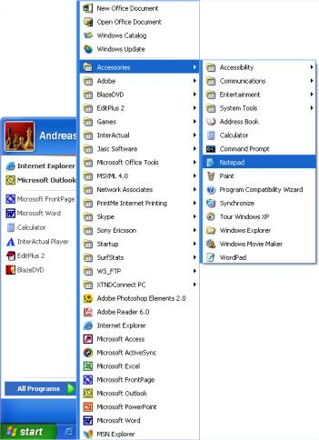

Mit dem, was Sie in den vorhergehenden Lektionen gelernt haben, sind Sie nur noch ein paar Minuten vom Erstellen Ihrer ersten Webseite entfernt.
In Lektion 1 haben wir gesehen, was man benötigt, um eine Webseite zu erstellen: ein Browser und Notepad (oder einen vergleichbaren Texteditor). Da Sie dieses lesen, haben Sie Ihren Browser geöffnet. Das einzige was Sie jetzt noch brauchen ist ein weiteres Browserfenster (starten Sie Ihren Browser einfach noch einmal), um das Tutorial weiter lesen und gleichzeitig Ihre entstehende Webseite anschauen zu können.
Öffnen Sie bitte auch Notepad (im Startmenü, unter Programme → Zubehör)

Jetzt sind wir bereit!
Lassen Sie uns mit etwas einfachem beginnen. Wie wäre es mit einer Seite, auf der “Das ist meine erste Homepage!” zu lesen ist? Lesen Sie weiter und Sie werden herausfinden, wie einfach es ist.
HTML arbeitet einfach und logisch. Der Browser liest HTML genau wie Sie selber: von links nach rechts und von oben nach unten. Deswegen beginnt ein HTML-Dokument mit dem, was zuerst auf der Seite dargestellt werden soll und endet mit dem, was zuletzt kommen soll.
Zu allererst muss man dem Browser mitteilen, dass man mit ihm in der Sprache HTML kommunizieren möchte. Dies geschieht mit dem Tag <html> (nicht überraschend oder?). Also bevor Sie irgendetwas anderes machen, schreiben Sie <html> in die erste Zeile Ihres Dokumentes im Notepad.
Wie Sie schon aus den vorhergehenden Lektionen wissen, ist <html> ein Start-Tag, der mit einem End-Tag geschlossen werden muss, wenn das HTML-Dokument beendet ist. Um sicherzustellen, dass der End-Tag nicht vergessen wird, schreiben Sie jetzt nach ein paar Leerzeilen “</html>”. Der Rest des HTML-Dokumentes wird nun zwischen <html> und </html> geschrieben.
Das nächste, was Ihr HTML-Dokument braucht, ist ein Kopf (engl. head) und einen Körper (engl. body). Der Kopf enthält Informationen über Ihr Dokument und im Körper steht der Inhalt des Dokuments.
Logischerweise steht der Kopf (<head> und </head>) über dem Körper (<body> und </body>).
Ihr Dokument im Notepad sollte mittlerweile wie folgt aussehen:
<html>
<head>
</head>
<body>
</body>
</html>
Haben Sie bemerkt, dass wir das Dokument strukturiert haben? Wir haben neue Zeilen benutzt (ENTER-Taste) und Tags eingerückt (Tabulator-Taste). Eigentlich spielt es keine Rolle, wie man das Dokument strukturiert. Aber um Ihnen und anderen zu helfen, Ihren Quellcode zu lesen und den Überblick zu behalten, empfehlen wir Ihnen, Ihre Dokumente mit Zeilenumbrüchen und Einrückungen, wie eben gesehen, zu strukturieren.
Wenn Ihr Dokument wie das obige Beispiel aussieht, haben Sie gerade Ihre erste Webseite erstellt – gut, sie ist etwas langweilig und vielleicht nicht das, woran Sie dachten, als Sie dieses Tutorial angefangen haben. Aber eben eine Webseite. Was Sie gerade erstellt haben, wird der Ausgangspunkt für Ihre zukünftigen HTML-Dokumente werden.
Wie Sie gerade schon erfahren haben, hat Ihr HTML-Dokument zwei Teile: den Kopf und den Körper. In den Kopfteil schreiben Sie Informationen über Ihre Seite, während im Körper die Inhalte zu stehen kommen, die dann im Browser angezeigt werden.
Wenn Sie Ihrer Seite z.B. einen Titel geben möchten, der am oberen Rand des Browsers stehen soll, muss dies im Kopfteil geschehen. Das Element, welches Sie hierfür verwenden müssen ist “title”. Den Titel Ihrer Seite schreiben Sie zwischen den Start-Tag <title> und den End-Tag </title>:
<title>Meine erste Webseite</title>
Bitte beachten Sie, dass dieser Titel nicht auf der Seite selbst zu sehen sein wird. Alles was auf der Seite zu sehen sein soll sind Inhalte, die zwischen den “body”-Tags stehen müssen.
Wie versprochen, soll ja auf der Seite “Das ist meine erste Homepage!” stehen. Dies ist der Inhalt der Seite und gehört deshalb in den “body” des Dokuments. Schreiben Sie nun die folgende Zeile zwischen die “body”-Tags:
<p>Das ist meine erste Homepage!</p>
Das p in <p> steht für das englische Wort ‘paragraph’ was soviel wie Absatz bedeutet. Und genau dieses ist es auch. Ein Text-Absatz.
Ihr HTML-Dokument sollte mittlerweile wie folgt aussehen:
<html>
<head>
<title>Meine erste Webseite</title>
</head>
<body>
<p>Das ist meine erste Homepage!</p>
</body>
</html>
Geschafft! Jetzt haben Sie Ihre erste wirkliche Webseite fertig gestellt.
Alles, was Sie jetzt noch tun müssen, ist, dass Sie die Seite auf Ihrer Festplatte speichern und sie dann im Browser zu öffnen:
Nun wechseln Sie zu Ihrem Browser:
In Ihrem Browser sollte nun “Das ist meine erste Homepage!” zu lesen sein. Herzlichen Glückwunsch!
Wenn Sie der Welt Ihr Meisterwerk unbedingt schon jetzt zeigen wollen, dann blättern Sie vor zu Lektion 13. Dort wird Ihnen gezeigt, wie man Seiten ins Internet lädt. Ansonsten, bleiben Sie geduldig und lesen weiter. Der Spaß hat erst begonnen.